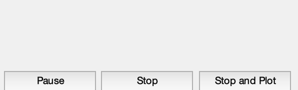
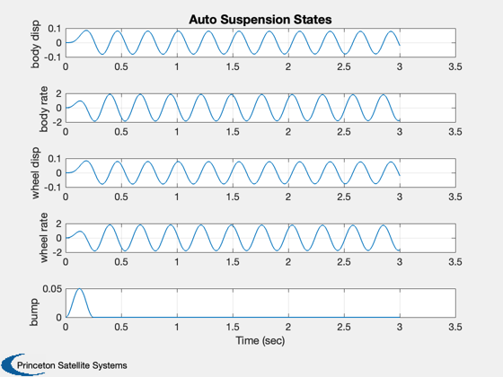
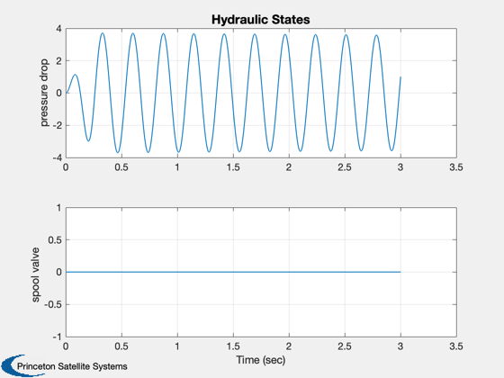

Simulation of Automobile Suspension
Simulates a quarter automobile model for the suspension with a hydraulic actuator. The automobile parameters and actuator parameters are defined and a bump disturbance is considered. The natural motion is simulated for three seconds (no control) and the results for the auto suspension and hydraulic states are displayed.
------------------------------------------------------------------------- Reference: Lin, J. and I. Kanellakopoulos (1997.) Nonlinear Design of Active Suspensions. IEEE Control Systems Magazine, June 1997. pp. 45-59 ------------------------------------------------------------------------- See also: RHSAutoSuspension, DBump, TimeGUI, Plot2D -------------------------------------------------------------------------
Contents
%-------------------------------------------------------------------------- % Copyright (c) 2001 Princeton Satellite Systems, Inc. % All rights reserved. %-------------------------------------------------------------------------- % Since version 1. %--------------------------------------------------------------------------
Global for the time GUI
Creates a global variable for the time GUI, which displays the time remaining and estimated completion of a simulation. It computes the time left to go in the simulation, the predicted finish time and the ratio of simulation time to real time. -------------------------------------------------------------------------
global simulationAction simulationAction = ' ';
Automobile parameters
SI units. ----------------------
clear d d.mB = 290; % Body mass (kg) d.mUS = 59; % Wheel mass (kg) d.kA = 16812; % Spring constant (N/m) d.cA = 1000; % Damping constant (N/(m/sec)) d.kT = 190000; % Tire spring constant (N/m)
Hydraulic actuator parameters
------------------------------
d.alpha = 4.515e13; % N/m^5 d.beta = 1; % alpha times piston leakage coefficient (1/s) d.gamma = 1.545e9; % N/(m^5/2 kg^1/2) d.tau = 1/30; % Spool valve time constant (s) d.pS = 10342500; % Supply pressure (Pa) d.a = 3.35e-4; % Piston area (m^2)
Bump disturbance
-----------------
d.aBump = 0.025; % Bump amplitude (m) d.wBump = 8*pi; % Bump frequency (rad/sec)
Control
--------
d.u = 0;
State
Form: [car body displacement;... car body rate;... wheel displacement;... wheel rate;... pressure drop across the piston;... spool valve displacement] ------------------------------------------
x = [0;0;0;0;0;0]; t = 0;
The control sampling period and the simulation integration time step
---------------------------------------------------------------------
dT = 1;
Number of sim steps
--------------------
tEnd = 3; nSim = 2000; dT = tEnd/(nSim-1);
Plotting arrays
----------------
tPlot = zeros(1,nSim); xPlot = zeros(7,nSim);
Time statistics function
-------------------------
tToGoMem = [];
Initialize the time display
----------------------------
tToGoMem.lastJD = 0; tToGoMem.lastStepsDone = 0; tToGoMem.kAve = 0; [ ratioRealTime, tToGoMem ] = TimeGUI( nSim, 0, tToGoMem, 0, dT,... 'Auto Suspension States' ); a = Jacobian( 'RHSAutoSuspension', x, t, d ); disp(a);
0 1 0 0 0 0
-57.972 -3.4483 57.972 3.4483 11.552 0
0 0 0 1 0 0
284.95 16.949 -3505.3 -16.949 -56.78 0
0 -1512.5 0 1512.5 -1 4.9687e+05
0 0 0 0 0 -30
 Run the simulation
-------------------
for k = 1:nSim % Display the status message % -------------------------- [ ratioRealTime, tToGoMem ] = TimeGUI(nSim,k,tToGoMem,ratioRealTime,dT); x = RK4( 'RHSAutoSuspension', x, dT, t, d ); t = t + dT; tPlot(k) = t; xPlot(:,k) = [x;DBump( t, d )]; % Time control % ------------ switch simulationAction case 'pause' pause simulationAction = ' '; case 'stop' return; case 'plot' break; end end TimeGUI( 'close' )
Plot results
This shows open loop results with the hydraulic actuator. The hydraulic actuator effectively dedamps the system. -------------------------------------------------------------------------
j = 1:k;
tPlot = tPlot(j);
yL = {'body disp','body rate', 'wheel disp','wheel rate','pressure drop',...
'spool valve','bump'};
k1 = [1:4 7];
k2 = 5:6;
Plot2D( tPlot, xPlot(k1 ,j),'Time (sec)',yL(k1),'Auto Suspension States')
Plot2D( tPlot, xPlot(k2 ,j),'Time (sec)',yL(k2),'Hydraulic States')
%--------------------------------------
% $Date$
% $Id: 1e28f4e41fe6492c776c01e436308864f6c5ee14 $
 